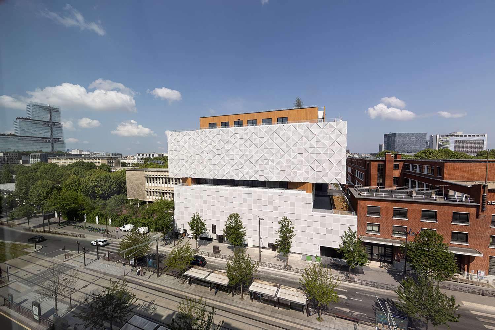

Photos et vidéos — contrôle navigateur
Ce banc de contrôle ouvre le lecteur partagé du site. La photo est issue de la fiche Paris ; la vidéo est une capture Figma archivée du 27 septembre, utilisée uniquement pour vérifier le lecteur.

Aucun relevé.